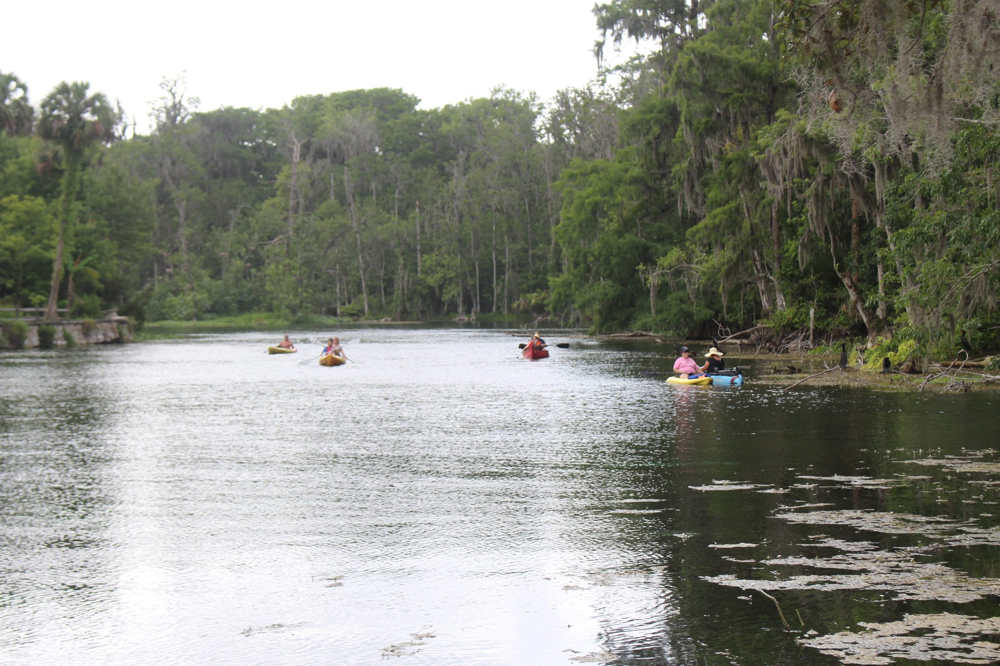
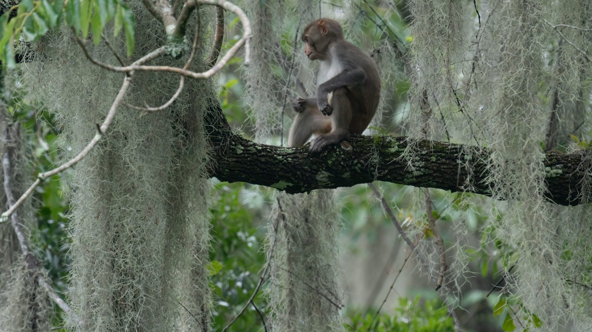
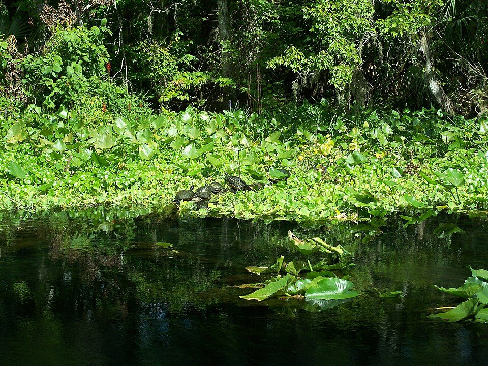
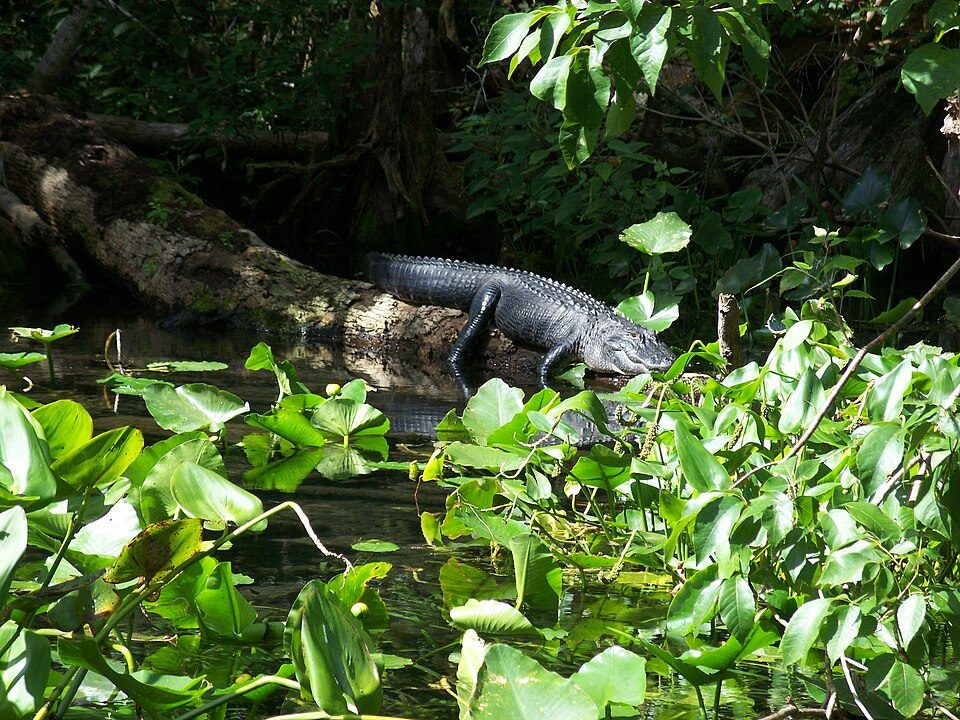
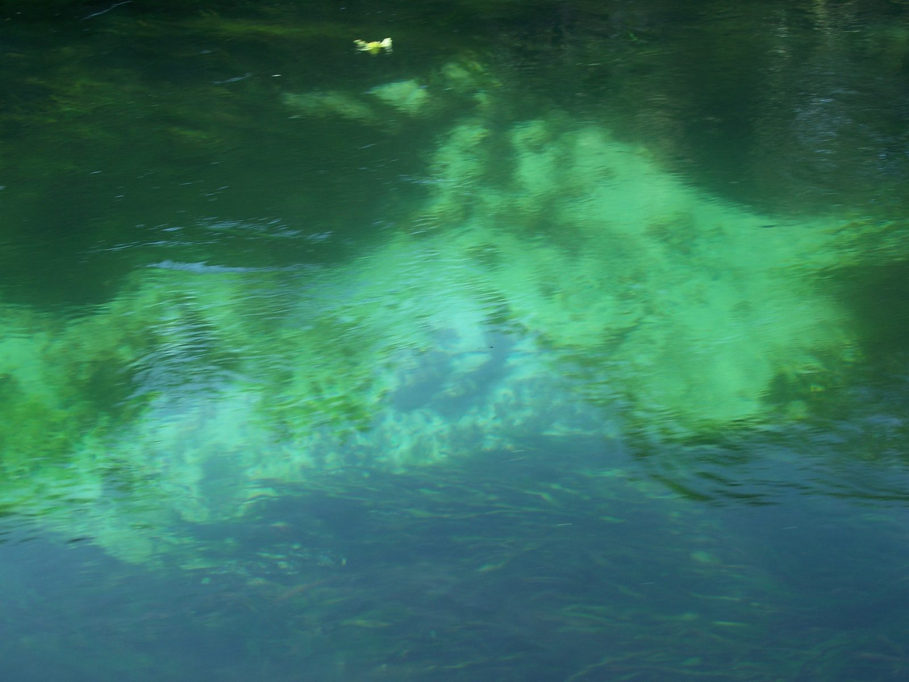
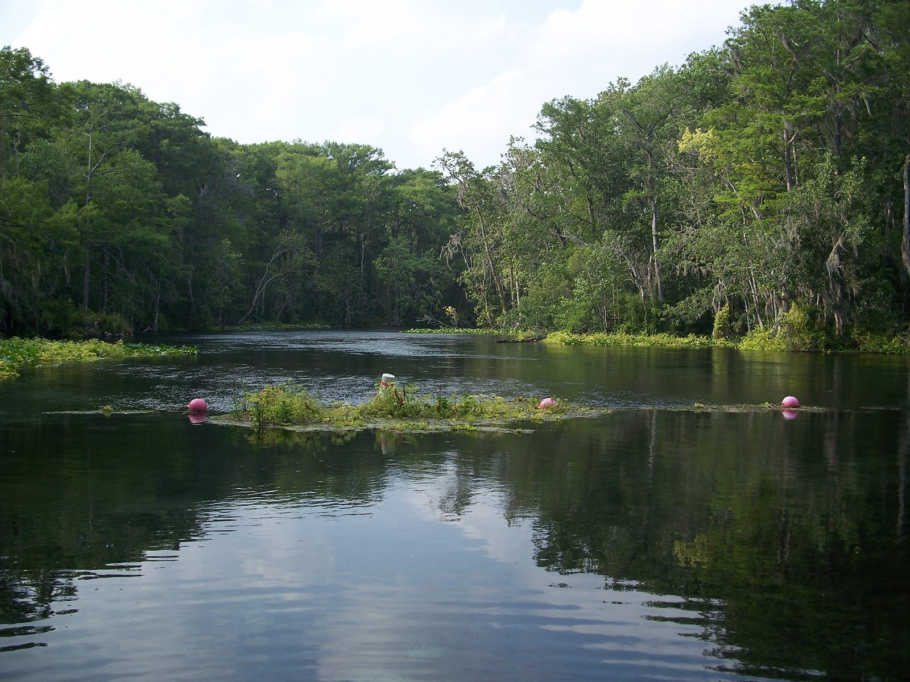
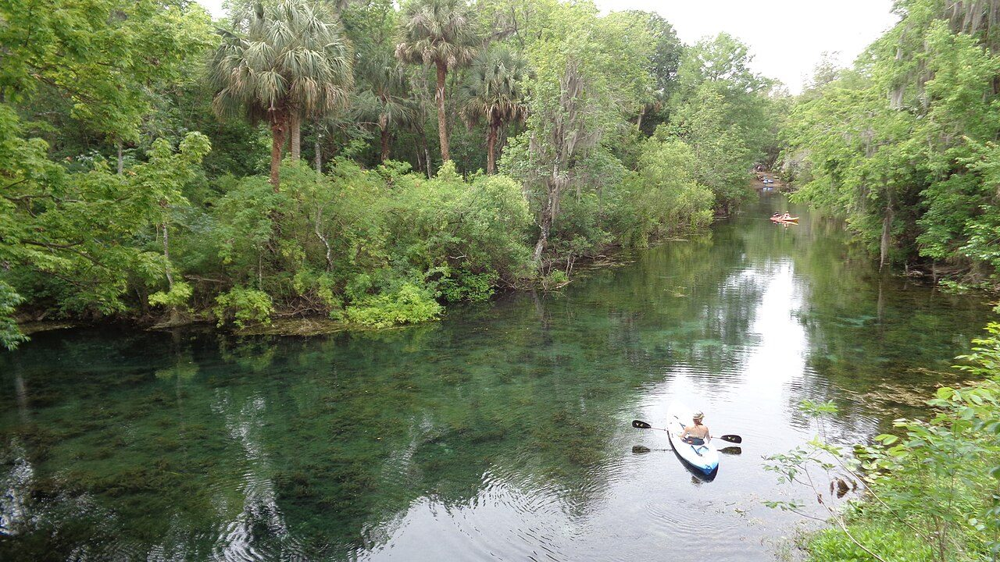
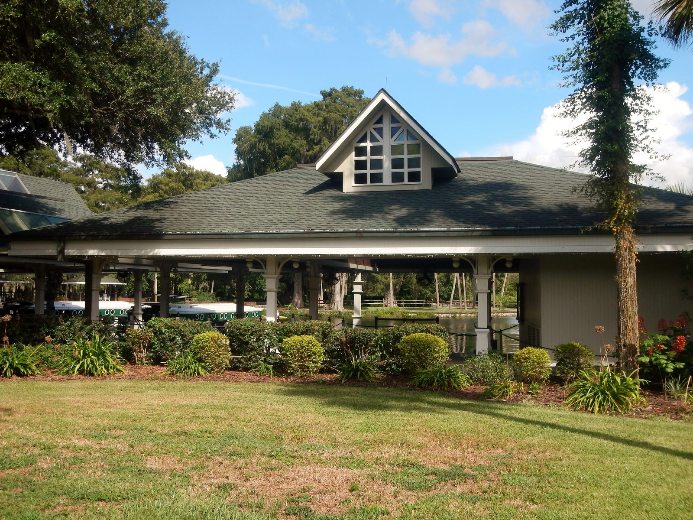

Reserve
Choose a single or tandem kayak and your preferred departure.

Silver Springs, Florida
A premium self-guided journey down the Silver River—crystal-clear water, unforgettable wildlife, and shuttle pickup included.
Simple from start to finish
Reserve online, launch at Silver Springs, explore at your own pace, and meet us at Ray Wayside Park for the ride back.
Choose a single or tandem kayak and your preferred departure.
Meet our team, receive your equipment, map, and safety briefing.
Paddle the spring-fed river without a guide or group schedule.
Finish at Ray Wayside Park and ride back with us.

The signature experience
Wild rhesus macaques live along the river corridor. Sightings are never guaranteed, but every trip travels through the habitat that made Silver Springs famous.
Premium, all-inclusive rentals
Every reservation includes the essential equipment and return shuttle—no surprise add-ons.
Stable sit-on-top kayak for one paddler.
Room for two paddlers in one stable kayak.
Trips operate Friday through Sunday with departures at 8:00 AM, 11:00 AM, and 1:00 PM. Park admission or parking fees, if charged by the park, are separate.
Every paddle is different
Look into the trees, across the banks, and beneath the clear water. The Silver River supports one of Florida's most memorable wildlife experiences.
Watch the canopy and riverbank while keeping a safe distance.

Frequently seen basking on logs or swimming below.

Give them space and never approach the shoreline near one.

Clear spring water reveals fish, submerged plants, and limestone features.

Your river journey
The route is approximately five miles. Most guests finish in three to four hours depending on pace, stops, and river conditions.
Equipment pickup, briefing, and launch.
Clear water and historic glass-bottom boat area.
Scan the canopy, banks, and water.
Meet the shuttle team at the finish.
Prepared, not complicated
Premium equipment, a clear plan, and direct instructions keep the day focused on the river.
Basic paddling and river-safety instruction before launch.
Stable kayaks, paddles, correctly sized PFDs, and dry storage.
Directions, arrival time, route guidance, and pickup details in one place.
Trips may be delayed or canceled when conditions are unsafe.


Before you arrive
Direct answers for planning your trip.
No. The route is suitable for many first-time paddlers who are comfortable around water and able to complete a multi-hour outdoor activity.
No wildlife sighting is guaranteed. Monkeys are wild animals that move throughout the river corridor.
Most guests take approximately three to four hours to complete the five-mile downriver route.
Bring drinking water, sunscreen, a hat, sunglasses with a retainer, water shoes, weather-appropriate clothing, and a small snack.
Yes. The rental price includes pickup at Ray Wayside Park and transportation back to the launch area.
Trips operate Friday through Sunday with scheduled departures at 8:00 AM, 11:00 AM, and 1:00 PM.
Yes. Anyone under 18 must be accompanied by a responsible adult.
No. Dogs and other pets are not permitted on Monkey Business Kayaks trips.
Reservations are non-refundable. When a trip qualifies for rescheduling, a raincheck is issued instead of a refund.
Yes. Lightning, high winds, flooding, severe weather, or unsafe operating conditions may require a delay, cancellation, or raincheck.